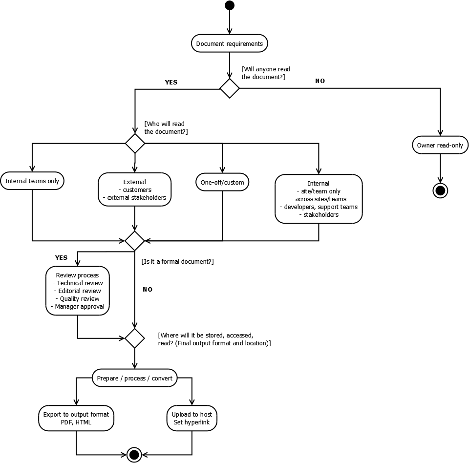
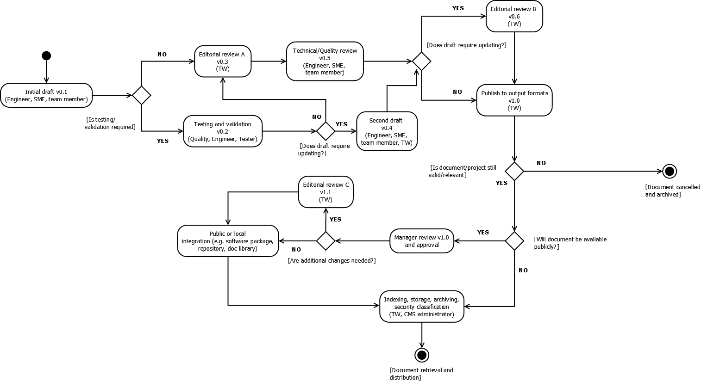
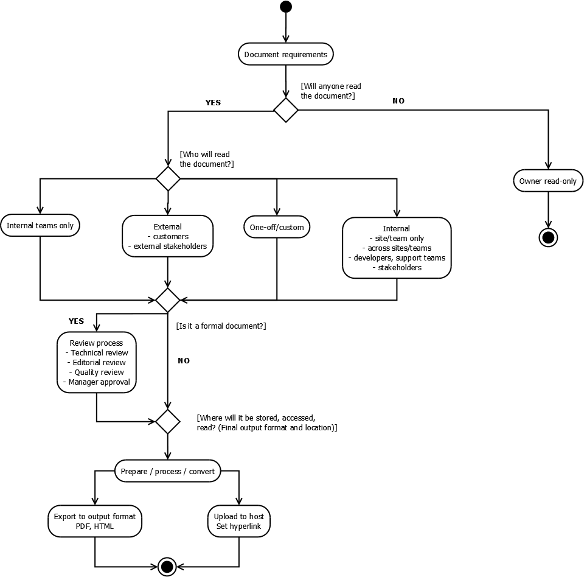
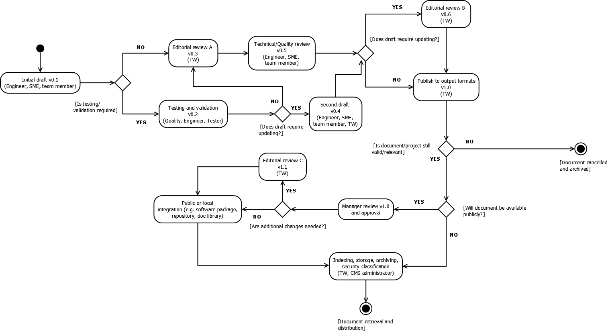

Document requirements and review workflow¶
The following diagram describes how document requirements are determined and processed.
The following diagram describes the document review workflow.
The following diagram describes how document requirements are determined and processed.
The following diagram describes the document review workflow.
